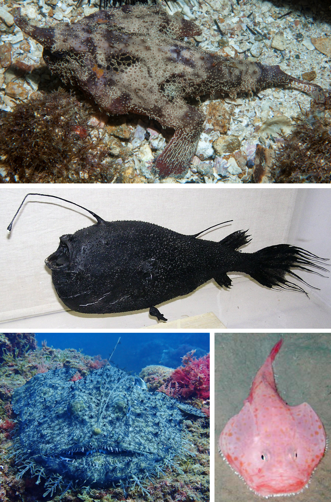
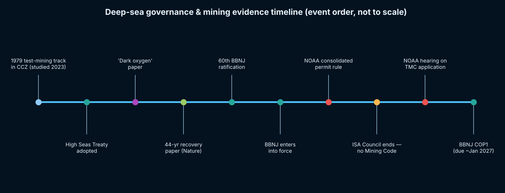
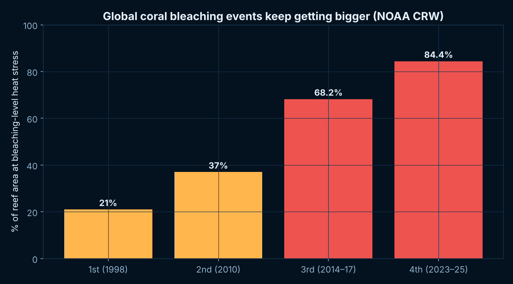
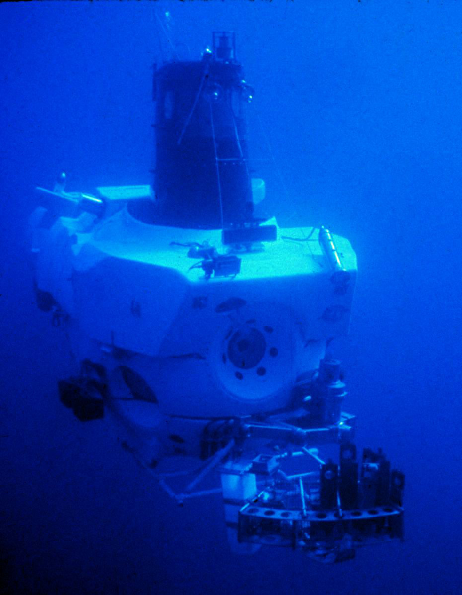
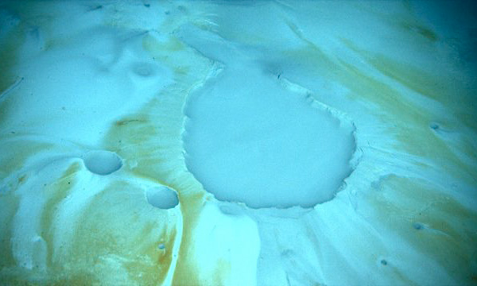

Research tracks
Each track: concepts → open questions → dated studies → sources, with original figures.

🐟 Biology
Deep-sea adaptations, deep vs shallow fish, 2025–26 discoveries

🛰 Exploration
Mapping vs seeing, depth records, platforms

⚖️ Governance & Mining
ISA Mining Code, NOAA/TMC permit, High Seas Treaty, evidence

🌡 Ocean Change
Coral bleaching, AMOC weakening, pressure & light

⚗️ Physics & Chemistry
Pressure, light, temperature, carbonate chemistry

🏗 Structure
Trenches, vents, seamounts, cables and wrecks

🗺 Deep-Water Types
Fjords, brine pools, volcanic margins, basins

🧬 Mutation & Adaptation
Evolution under pressure, darkness and cold
Interactive labs
Single-file browser labs, no install needed.
🌊 Dive Profile Lab
Pressure, light, temperature and life from 0 to 10,935 m
Open lab →🧬 Live Evolution Lab
DNA mutation pulses and fish phenotype change
Open lab →🌳 Evolution Timeline Tree
Million-year lineage branching under deep-sea pressure
Open lab →Tracker snapshot · 15 Nov 2026
| Stream | Status | Next |
|---|---|---|
| ISA Mining Code | Not adopted (Jul 2026) | 32nd session 2027 |
| NOAA / TMC permit | Application fully compliant; hearing 13 Oct 2026 | Certification → EIS |
| High Seas Treaty | In force 17 Jan 2026 | COP1 ~Jan 2027 |
| Dark oxygen | Contested; DORI follow-up | 2026 lander results |
| Coral bleaching | 4th event ended mid-2025 | Near-annual bleaching era |
| AMOC | 43–59% weakening by 2100 projected | More array data |
Paper deep-reads
- Peng, Du et al. 2025 — Chemosynthetic life at 9,533 m Nature · open access
- Jones et al. 2025 — Mining track after 44 years Nature
- Sweetman et al. 2024 — Dark oxygen Nature Geoscience · open access
- Bell et al. 2025 — How little we've seen Science Advances · open access
- Portmann et al. 2026 — ~50% AMOC weakening Science Advances · open access
Sister hub
🌌
Outer Space Research Hub
Stars, planets, cosmology, missions and the search for life — the ocean worlds of Europa and Enceladus link the two hubs.